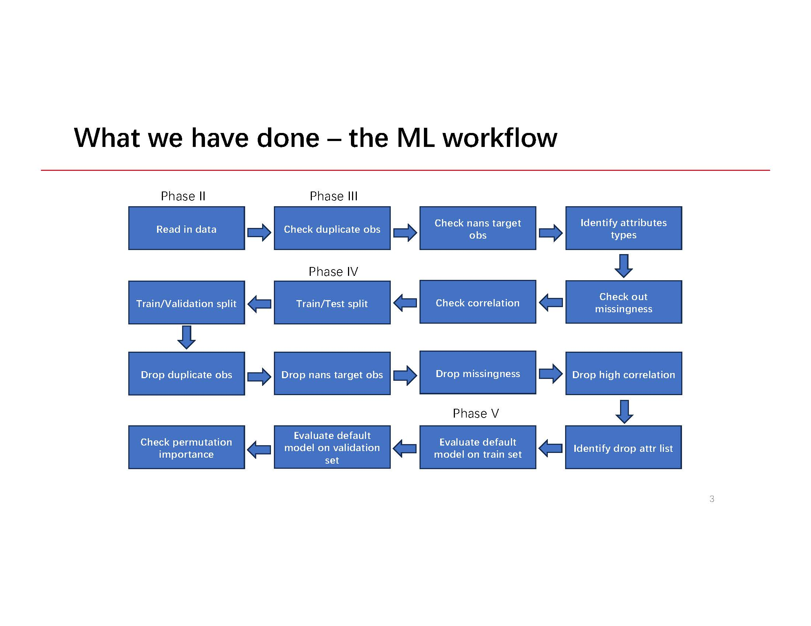
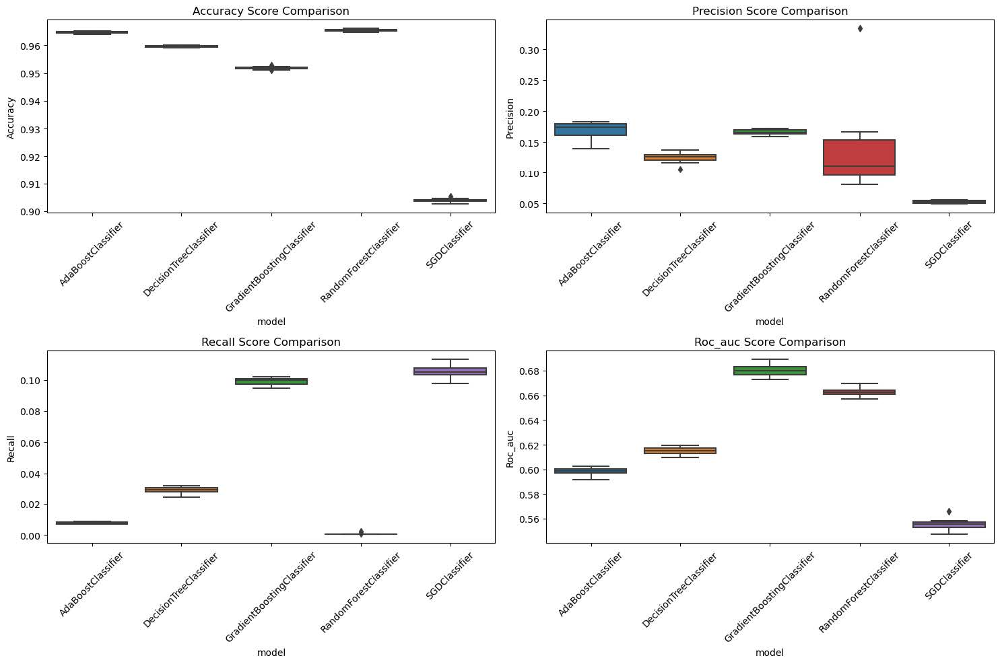

Introduction
Initially, the goal is to increase the efficiency of targeted advertising by accurately predicting the likelihood of a user clicking on an advertisement, enabling improved return on investment (ROI) and lower cost on advertising. Therefore, we want to find the best model for the CTR (Click-Through Rate) prediction. There are many performance metrices to evaluate the model. In our project, we decide to focus on minimizing false positives while balancing with other metrics. We mainly consider precision or false positive rather than false negative because the project target is recommending advertisements to users based on the click rate prediction. As a result, higher false positive would show more advertisements that the user would be less likely to click. And this could make the user feel less engaged and tend the leave the application.

Presentation
Gradient Boosting Classifier has very high Precision (which is what we demands firstly) and a very high recall. It would be the ideal model for production.
